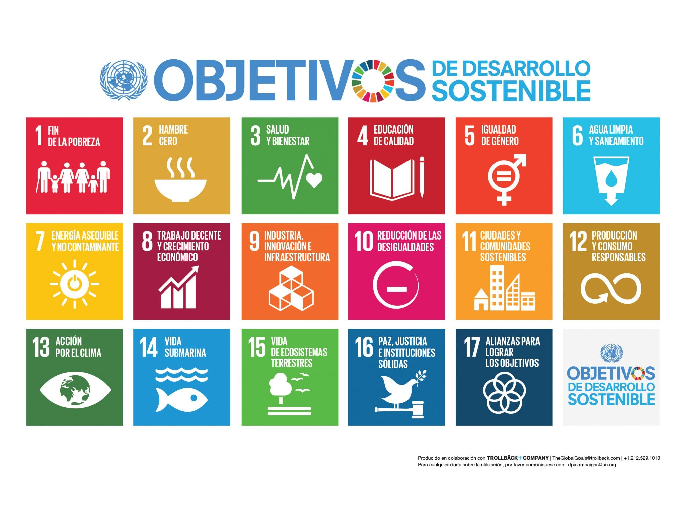

Somos un grupo de estudiantes de la Universidad Autonoma de occidente, que cursan en sexto semestre la asignatura de ambiente y desarrollo sostenible. El grupo esta conformado por personas de las carreras de Ingenieria Mecatrónica e Ingenieria Informática. Tenemos como objetivo ayudar al medio ambiente con una solución sustentable para el uso eficaz de los recursos hidricos.
